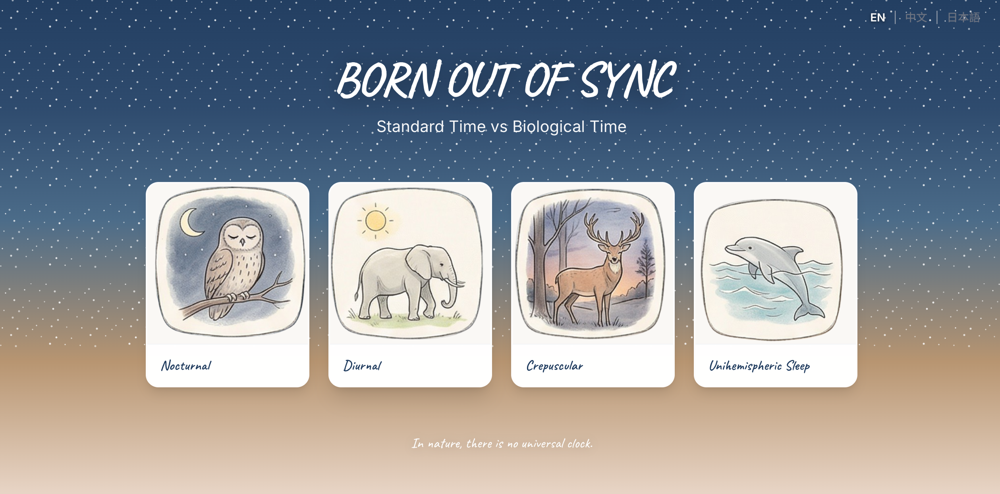

Social Time vs Biological Time
An interactive storytelling website exploring the relationship between social schedules and biological rhythms. Through data visualization and narrative sections, the project explains chronotypes and illustrates how fixed social time can create social jetlag.